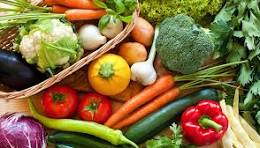

Vegetables are usually classified on the basis of the part of the plant that is used for food. The root vegetables include beets, carrots, radishes, sweet potatoes, and turnips. Stem vegetables include asparagus and kohlrabi. Among the edible tubers, or underground stems, are potatoes. The leaf and leafstalk vegetables include brussels sprouts, cabbage, celery, lettuce, rhubarb, and spinach. Among the bulb vegetables are garlic, leeks, and onions. The head, or flower, vegetables include artichokes, broccoli, and cauliflower. The fruits commonly considered vegetables by virtue of their use include cucumbers, eggplant, okra, sweet corn, squash, peppers, and tomatoes. Seed vegetables are usually legumes, such as peas and beans.